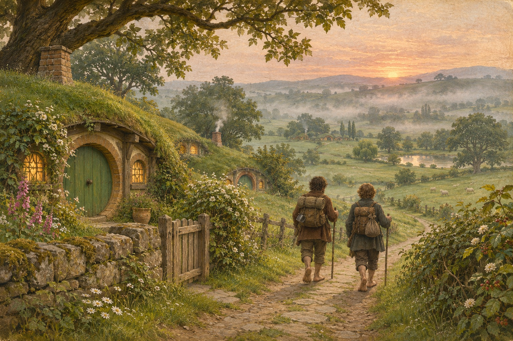

STORY ATLAS
故事图谱
六部作品，按事件真正发生的先后重排。一条时间线读故事，一张关系网看人物——不分章节，只问先后。
三体
刘慈欣 · 三部曲
从红岸的第一声呼唤，到宇宙之外的五公斤生态球。一个文明如何在四百年里，把自己交出去，又抢回来。
68 时间点/32 人物/20 幅配图
基督山伯爵
大仲马 · 完整主线
一个人用十四年换来财富，再用十年想清楚要不要用它。
44 时间点/28 人物
百年孤独
加西亚·马尔克斯 · 七代家族
同名的人在不同年代醒来，重复同一种孤独。
45 时间点/26 人物

魔戒
托尔金 · 三部曲
走路的人，比挥剑的人更重要。
44 时间点/27 人物

沙丘
弗兰克·赫伯特 · 第一部
在沙漠里学会骑沙虫的人，也学会了当神。
40 时间点/23 人物
红楼梦
曹雪芹 · 通行一百二十回
一座园子从建起来到散掉，一个家族在体面里慢慢空掉。
50 时间点/40 人物
基地基地
艾萨克·阿西莫夫 · 七部主线
一个用数学预言的未来，和两个试图缩短黑暗的基地。
30 时间点/13 人物
三国演义三国演义
罗贯中 · 一百二十回
从桃园结义到三家归晋，近百年的征战与背叛。
42 时间点/33 人物
水浒传水浒传
施耐庵 · 一百二十回
一百零八个人，各有各的活不下去。
34 时间点/21 人物
西游记西游记
吴承恩 · 一百回
一只石猴走了十万八千里，八十一难都不是为了吃唐僧肉。
36 时间点/16 人物
活着活着
余华 · 长篇
一个人亲手送走所有亲人，最后和一头牛一起活着。
14 时间点/11 人物
冰与火之歌冰与火之歌
乔治·R·R·马丁 · 前三部
七个王国，九个家族，一张铁王座。每个人都以为自己在做正确的事。
34 时间点/31 人物
白夜行白夜行
东野圭吾 · 长篇
一桩十九年没破的命案，两条从不交汇的路。她在白天走，他在黑里走。
28 时间点/18 人物
嫌疑人 X 的献身嫌疑人 X 的献身
东野圭吾 · 长篇
一个数学家用一条人命，替一对母女摆平了一桩命案。警察查了四个月，方向从一开始就错了。
28 时间点/12 人物
无人生还无人生还
阿加莎·克里斯蒂 · 长篇
十个人被请到一座没有退路的岛上，一首童谣，一段一条命。等警察上岛时，一个也没剩。
22 时间点/13 人物
东方快车谋杀案东方快车谋杀案
阿加莎·克里斯蒂 · 长篇
大雪把列车困在荒野，死者身上十二处刀伤。十三个人，十三份完美的不在场证明。
27 时间点/17 人物
漫长的告别漫长的告别
雷蒙德·钱德勒 · 长篇
一个酒鬼，一个侦探，一杯螺丝起子。朋友死了，又活了过来，然后变成了一个陌生人。
26 时间点/13 人物
福尔摩斯探案集福尔摩斯探案集
柯南·道尔 · 精选 19 案
六十年，六十个案子，一个不肯退休的人。他从一顶帽子看出一个人的一生。
23 时间点/16 人物
龙纹身的女孩龙纹身的女孩
斯蒂格·拉森 · 千禧年系列
一个身败名裂的记者，一个被国家监护的女孩，一桩四十年没破的失踪案。
24 时间点/15 人物
消失的爱人消失的爱人
吉莉安·弗林 · 长篇
结婚五周年那天，妻子不见了。丈夫在电视上笑了一下，全国都认定他是凶手。
26 时间点/13 人物
双城记双城记
查尔斯·狄更斯 · 长篇
一个医生被关了十八年，一个贵族放弃了姓氏，一个酒鬼替别人上了断头台。
25 时间点/13 人物
悲惨世界悲惨世界
维克多·雨果 · 长篇
一个人偷了一块面包，坐了十九年牢；一个主教用两个烛台把他买了回来。
30 时间点/14 人物
傲慢与偏见傲慢与偏见
简·奥斯汀 · 长篇
一个年入一万镑的男人，一个嘴快的姑娘，一句「她不够漂亮」，要用一整本书来收回。
24 时间点/15 人物
简·爱简·爱
夏洛蒂·勃朗特 · 长篇
一个不美、不富、不肯低头的姑娘，爱上一个骗了她的人，然后自己走了出去。
28 时间点/14 人物
呼啸山庄呼啸山庄
艾米莉·勃朗特 · 长篇
一个捡回来的孩子，一个嫁错人的姑娘，两座庄园，三代人。
20 时间点/11 人物
战争与和平战争与和平
列夫·托尔斯泰 · 长篇
五大家族，一场入侵。有人在战场上看见天空，有人在客厅里找活着的意义。
19 时间点/12 人物
安娜·卡列尼娜安娜·卡列尼娜
列夫·托尔斯泰 · 长篇
一个女人为了爱情抛下一切，一个男人在乡下找活着的意义。
20 时间点/9 人物